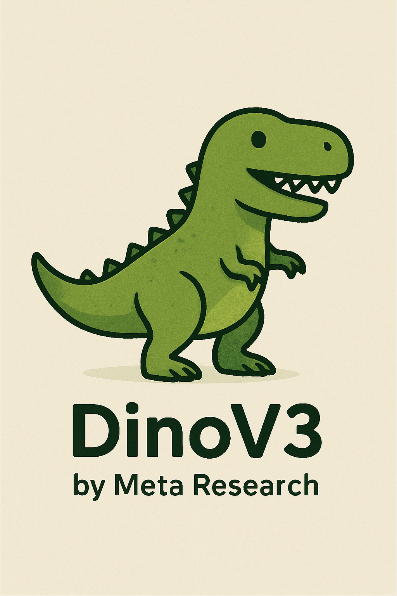

timeline
title Evolution of DINO Models
2021 : DINO v1
: Self-distillation with ViTs
: Emergent segmentation properties
: Limited scale
2023 : DINO v2
: Improved training methodology
: Better data curation
: Enhanced downstream performance
2024 : DINO v3
: Massive scale (1.7B images)
: Universal backbone
: 7B parameter models
: State-of-the-art frozen performance
Complete Guide to DINOv3: Self-Supervised Vision Transformers

Introduction
DINOv3 represents a breakthrough in computer vision, offering the first truly universal vision backbone that achieves state-of-the-art performance across diverse visual tasks without requiring fine-tuning. Developed by Meta AI, DINOv3 scales self-supervised learning to unprecedented levels, training on 1.7 billion images with up to 7 billion parameters.
NoteKey Innovation
DINOv3’s ability to produce high-quality, transferable features that work across different domains and tasks straight out of the box represents a significant advancement in foundation models for computer vision.
What is DINOv3?
DINOv3 is a self-supervised learning method for computer vision that uses Vision Transformers (ViTs) to learn robust visual representations without labeled data. The key innovation lies in its ability to produce high-quality, transferable features that work across different domains and tasks straight out of the box.
Core Principles
Self-Supervised Learning: DINOv3 learns by comparing different views of the same image, using a teacher-student framework where the model learns to predict consistent representations across augmented versions of images.
Universal Features: Unlike traditional models trained for specific tasks, DINOv3 produces general-purpose visual features that transfer well to various downstream applications.
Scalability: The architecture is designed to scale effectively with both dataset size and model parameters, enabling training on massive datasets.
Evolution from DINO to DINOv3
DINO (2021)
- Introduced self-distillation with Vision Transformers
- Demonstrated emergent segmentation properties
- Limited to smaller scales and datasets
DINOv2 (2023)
- Improved training methodology
- Better data curation techniques
- Enhanced performance on downstream tasks
DINOv3 (2024)
- Massive scale: 1.7 billion images, 7 billion parameters
- First frozen backbone to outperform specialized models
- Universal performance across domains (natural, aerial, medical images)
- High-resolution feature extraction capabilities
Key Features and Capabilities
- Single model works across multiple domains without fine-tuning
- Consistent performance on natural images, satellite imagery, and specialized domains
- Eliminates need for domain-specific model training
- Produces detailed, semantically meaningful feature maps
- Enables fine-grained understanding of image content
- Supports dense prediction tasks effectively
- Achieves state-of-the-art results without parameter updates
- Reduces computational overhead for deployment
- Simplifies integration into existing pipelines
- Automatic semantic segmentation capabilities
- Object localization without explicit training
- Scene understanding and spatial reasoning
Technical Architecture
Vision Transformer Backbone
DINOv3 builds upon the Vision Transformer architecture with several key modifications:
flowchart LR
A[Input Image] --> B[Patch Embedding]
B --> C[Positional Encoding]
C --> D[Transformer Blocks]
D --> E[Feature Extraction]
E --> F[Output Features]
Self-Distillation Framework
TipTeacher-Student Learning
The self-distillation framework consists of two networks: a teacher network (exponential moving average of student weights) and a student network (main learning network).
Teacher Network:
- Exponential moving average of student weights
- Produces stable target representations
- Uses centering and sharpening operations
Student Network:
- Main learning network
- Processes augmented image views
- Minimizes distance to teacher representations
Key Components
- Patch Embedding: Divides images into patches and projects them to embedding space
- Multi-Head Attention: Captures relationships between image patches
- Feed-Forward Networks: Processes attention outputs
- Layer Normalization: Stabilizes training
- CLS Token: Global image representation
Training Methodology
Dataset Curation
- Scale: 1.7 billion images from diverse sources
- Quality Control: Automated filtering and deduplication
- Diversity: Natural images, web content, satellite imagery
- Resolution: High-resolution training for detailed features
Training Process
- Data Augmentation: Multiple views of each image through crops, color jittering, and geometric transforms
- Teacher-Student Learning: Student network learns to match teacher predictions
- Multi-Crop Strategy: Uses global and local crops for comprehensive understanding
- Loss Function: Cross-entropy between student and teacher outputs
- Optimization: AdamW optimizer with cosine learning rate schedule
Training Infrastructure
- Distributed training across multiple GPUs
- Gradient accumulation for effective large batch training
- Mixed precision for memory efficiency
- Checkpoint saving and resumption capabilities
Model Variants and Specifications
Available Models
| Model | Parameters | Patch Size | Input Resolution | Use Case |
|---|---|---|---|---|
| DINOv3-ViT-S/16 | 22M | 16×16 | 224×224+ | Lightweight applications |
| DINOv3-ViT-B/16 | 86M | 16×16 | 224×224+ | Balanced performance |
| DINOv3-ViT-L/16 | 307M | 16×16 | 224×224+ | High performance |
| DINOv3-ViT-g/16 | 1.1B | 16×16 | 224×224+ | Maximum capability |
| DINOv3-ViT-G/16 | 7B | 16×16 | 518×518+ | Research and high-end applications |
Model Selection Guidelines
ImportantChoosing the Right Model
- Small (S): Mobile and edge applications, real-time inference
- Base (B): General purpose, good balance of speed and accuracy
- Large (L): High-accuracy applications, research
- Giant (g/G): Maximum performance, resource-rich environments
Installation and Setup
Prerequisites
# Python 3.8+
# PyTorch 1.12+
# CUDA (for GPU acceleration)Installation Options
Option 1: Using Hugging Face Transformers
pip install transformers torch torchvisionOption 2: From Source
git clone https://github.com/facebookresearch/dinov3.git
cd dinov3
pip install -e .Option 3: Using Pre-built Containers
docker pull pytorch/pytorch:latest
# Add DINOv3 installation commandsEnvironment Setup
# Create conda environment
conda create -n dinov3 python=3.9
conda activate dinov3
# Install dependencies
pip install torch torchvision torchaudio
pip install transformers pillow numpy matplotlibUsage Examples
Basic Feature Extraction
import torch
from transformers import DINOv3Model, DINOv3ImageProcessor
from PIL import Image
# Load model and processor
processor = DINOv3ImageProcessor.from_pretrained(
'facebook/dinov3-vits16-pretrain-lvd1689m'
)
model = DINOv3Model.from_pretrained(
'facebook/dinov3-vits16-pretrain-lvd1689m'
)
# Load and process image
image = Image.open('path/to/your/image.jpg')
inputs = processor(image, return_tensors="pt")
# Extract features
with torch.no_grad():
outputs = model(**inputs)
features = outputs.last_hidden_state
cls_token = features[:, 0] # Global representation
patch_features = features[:, 1:] # Patch-level featuresBatch Processing
import torch
from torch.utils.data import DataLoader
from torchvision import transforms
from PIL import Image
import os
# Custom dataset class
class ImageDataset(torch.utils.data.Dataset):
def __init__(self, image_dir, transform=None):
self.image_dir = image_dir
self.image_files = [
f for f in os.listdir(image_dir)
if f.endswith(('.jpg', '.png'))
]
self.transform = transform
def __len__(self):
return len(self.image_files)
def __getitem__(self, idx):
image_path = os.path.join(self.image_dir, self.image_files[idx])
image = Image.open(image_path).convert('RGB')
if self.transform:
image = self.transform(image)
return image
# Setup data loading
transform = transforms.Compose([
transforms.Resize((224, 224)),
transforms.ToTensor(),
transforms.Normalize(
mean=[0.485, 0.456, 0.406],
std=[0.229, 0.224, 0.225]
)
])
dataset = ImageDataset('path/to/images', transform=transform)
dataloader = DataLoader(dataset, batch_size=32, shuffle=False)
# Process batches
model.eval()
all_features = []
for batch in dataloader:
with torch.no_grad():
outputs = model(pixel_values=batch)
features = outputs.last_hidden_state[:, 0] # CLS tokens
all_features.append(features)
all_features = torch.cat(all_features, dim=0)Fine-tuning for Classification
import torch
import torch.nn as nn
from transformers import DINOv3Model
class DINOv3Classifier(nn.Module):
def __init__(self, num_classes=1000,
pretrained_model_name='facebook/dinov3-vits16-pretrain-lvd1689m'):
super().__init__()
self.backbone = DINOv3Model.from_pretrained(pretrained_model_name)
self.classifier = nn.Linear(
self.backbone.config.hidden_size,
num_classes
)
def forward(self, pixel_values):
outputs = self.backbone(pixel_values=pixel_values)
cls_token = outputs.last_hidden_state[:, 0]
return self.classifier(cls_token)
# Usage
model = DINOv3Classifier(num_classes=10)
optimizer = torch.optim.AdamW(model.parameters(), lr=1e-4)
criterion = nn.CrossEntropyLoss()
# Training loop would go hereSemantic Segmentation Setup
import torch
import torch.nn as nn
from transformers import DINOv3Model
class DINOv3Segmentation(nn.Module):
def __init__(self, num_classes,
pretrained_model_name='facebook/dinov3-vits16-pretrain-lvd1689m'):
super().__init__()
self.backbone = DINOv3Model.from_pretrained(pretrained_model_name)
self.decode_head = nn.Sequential(
nn.Conv2d(self.backbone.config.hidden_size, 256, 3, padding=1),
nn.BatchNorm2d(256),
nn.ReLU(inplace=True),
nn.Conv2d(256, num_classes, 1)
)
def forward(self, pixel_values):
B, C, H, W = pixel_values.shape
outputs = self.backbone(pixel_values=pixel_values)
patch_features = outputs.last_hidden_state[:, 1:] # Remove CLS token
# Reshape to spatial dimensions
patch_size = 16
h_patches, w_patches = H // patch_size, W // patch_size
features = patch_features.reshape(B, h_patches, w_patches, -1)
features = features.permute(0, 3, 1, 2) # B, C, H, W
# Upsample and classify
features = nn.functional.interpolate(
features, size=(H, W), mode='bilinear'
)
return self.decode_head(features)Applications and Use Cases
Computer Vision Tasks
- Use DINOv3 features with detection heads (DETR, FasterRCNN)
- Excellent performance without fine-tuning
- Works across diverse object categories
- Dense pixel-level predictions
- High-quality boundary detection
- Effective for medical imaging, aerial imagery
- Combines detection and segmentation
- Useful for counting and analysis applications
- Good generalization to new domains
Content Understanding
Image Retrieval
- Use CLS token as global image descriptor
- Efficient similarity search in large databases
- Cross-domain retrieval capabilities
Content Moderation
- Detect inappropriate or harmful content
- Classify image types and categories
- Identify policy violations
Quality Assessment
- Assess image quality and aesthetics
- Detect blurriness, artifacts, or corruption
- Content filtering and ranking
Scientific Applications
Medical Imaging
- Pathology analysis
- Radiology image understanding
- Drug discovery applications
Satellite Imagery
- Land use classification
- Environmental monitoring
- Urban planning and development
Biological Research
- Cell counting and classification
- Microscopy image analysis
- Species identification
Creative and Media Applications
Art and Design
- Style transfer and generation
- Content-aware editing
- Creative asset organization
Video Analysis
- Frame-level understanding
- Action recognition
- Video summarization
Performance and Benchmarks
ImageNet Classification
- Linear Probing: 84.5% top-1 accuracy (ViT-G)
- k-NN Classification: 82.1% top-1 accuracy
- Few-shot Learning: Superior performance with limited data
Dense Prediction Tasks
- ADE20K Segmentation: 58.8 mIoU
- COCO Detection: 59.3 AP (Mask R-CNN)
- Video Segmentation: State-of-the-art on DAVIS
Cross-Domain Performance
- Natural Images: Excellent baseline performance
- Aerial Imagery: 15-20% improvement over supervised baselines
- Medical Images: Strong transfer learning capabilities
Computational Efficiency
- Inference Speed: Competitive with supervised models
- Memory Usage: Efficient attention mechanisms
- Scalability: Linear scaling with input resolution
Advantages and Limitations
Advantages
TipKey Strengths
Universal Applicability
- Single model for multiple tasks
- No fine-tuning required for many applications
- Consistent performance across domains
High-Quality Features
- Rich semantic representations
- Fine-grained spatial information
- Emergent properties like segmentation
Scalability
- Effective use of large datasets
- Scales well with model size
- Efficient training methodology
Research Impact
- Pushes boundaries of self-supervised learning
- Demonstrates viability of foundation models in vision
- Enables new research directions
Limitations
WarningCurrent Constraints
Computational Requirements
- Large models require significant resources
- High memory usage during training
- GPU-intensive inference for large variants
Data Dependency
- Performance depends on training data quality
- May have biases from training dataset
- Limited performance on very specialized domains
Interpretability
- Complex attention mechanisms
- Difficult to understand learned representations
- Black-box nature of transformers
Task-Specific Limitations
- May not match specialized models for specific tasks
- Requires additional components for some applications
- Not optimized for real-time mobile applications
Future Directions
Technical Improvements
Architecture Enhancements
- More efficient attention mechanisms
- Better handling of high-resolution images
- Improved spatial reasoning capabilities
Training Methodology
- Better data curation strategies
- More efficient self-supervised objectives
- Multi-modal learning integration
Scalability
- Even larger models and datasets
- Better distributed training techniques
- More efficient inference methods
Application Areas
Multimodal Learning
- Integration with language models
- Vision-language understanding
- Cross-modal retrieval and generation
Real-time Applications
- Mobile and edge deployment
- Real-time video processing
- Interactive applications
Specialized Domains
- Domain-specific fine-tuning strategies
- Better handling of specialized imagery
- Integration with domain knowledge
Research Opportunities
Foundation Models
- Vision-centric foundation models
- Integration with other modalities
- Unified multimodal architectures
Self-Supervised Learning
- New pretext tasks and objectives
- Better theoretical understanding
- More efficient training methods
Transfer Learning
- Better understanding of transferability
- Improved few-shot learning
- Domain adaptation techniques
Resources and References
Official Resources
- GitHub Repository: facebookresearch/dinov3
- Hugging Face Models: facebook/dinov3-*
- Meta AI Blog: Technical blog posts and announcements
- ArXiv Papers: Latest research publications
Documentation and Tutorials
- Hugging Face Documentation: Comprehensive usage guides
- PyTorch Tutorials: Integration with PyTorch ecosystem
- Community Tutorials: Third-party guides and examples
Community and Support
- GitHub Issues: Bug reports and feature requests
- Research Community: Academic discussions and collaborations
- Industry Applications: Real-world deployment examples
Conclusion
DINOv3 represents a significant milestone in computer vision, demonstrating that self-supervised learning can produce universal visual features that rival or exceed specialized supervised models. Its ability to work across diverse domains without fine-tuning opens up new possibilities for practical applications and research directions.
The model’s success lies in its careful scaling of both data and model size, combined with effective self-supervised training techniques. As the field continues to evolve, DINOv3 provides a strong foundation for future developments in foundation models for computer vision.
Whether you’re a researcher exploring new frontiers in self-supervised learning or a practitioner looking to deploy state-of-the-art vision capabilities, DINOv3 offers a powerful and flexible solution that can adapt to a wide range of visual understanding tasks.
NoteLooking Forward
The success of DINOv3 paves the way for even more powerful and universal vision models, potentially leading to truly general-purpose computer vision systems that can understand and analyze visual content across any domain.